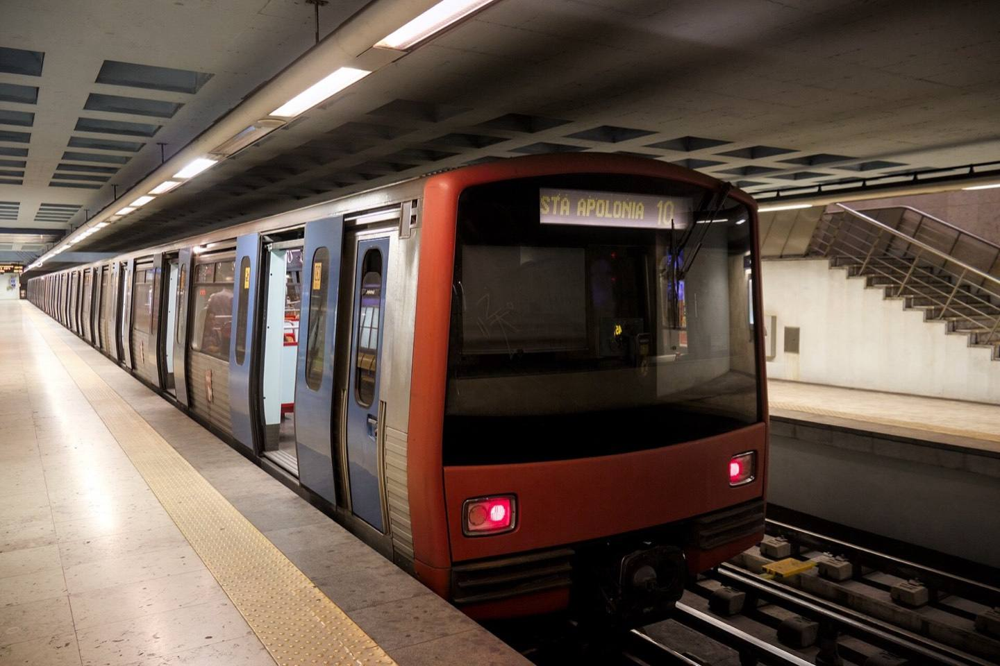
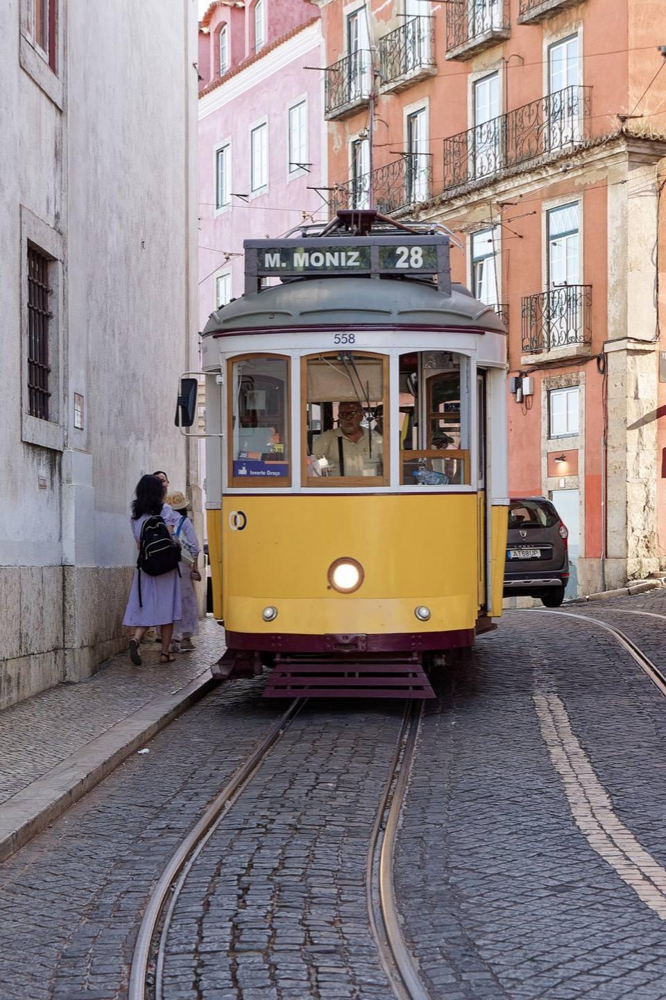
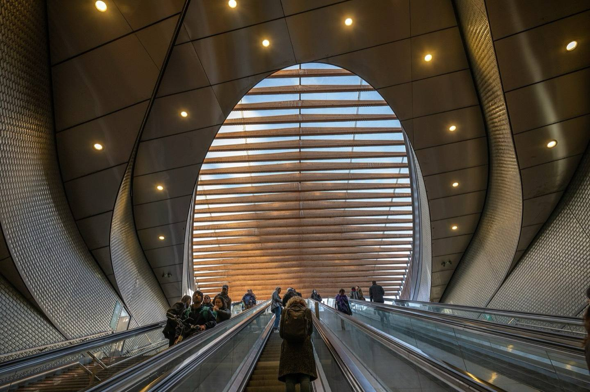

Board where the exit is.
Live departures, delays and the fastest exit at every Lisbon metro station.

Ride in the right carriage.
The exit screen tells you which end to board, before the doors open.

Late lines, upstairs.
Every line’s status, before you tap in.
